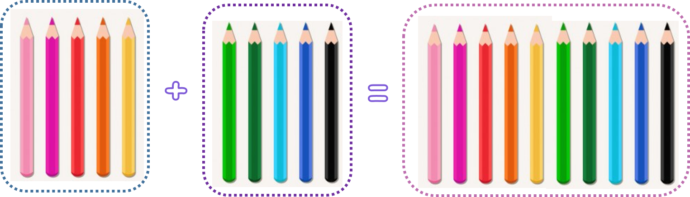
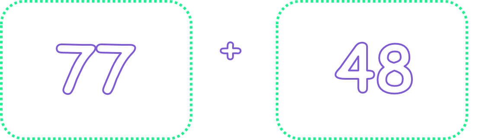
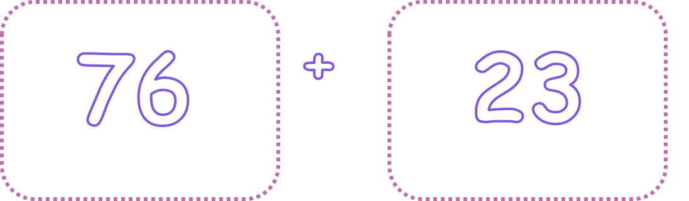
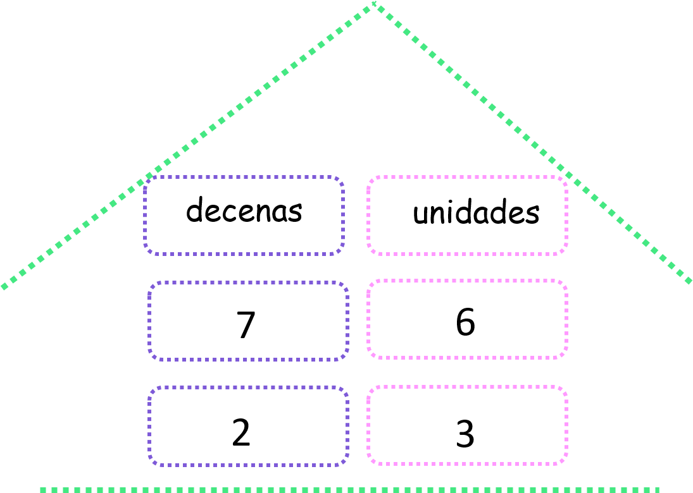
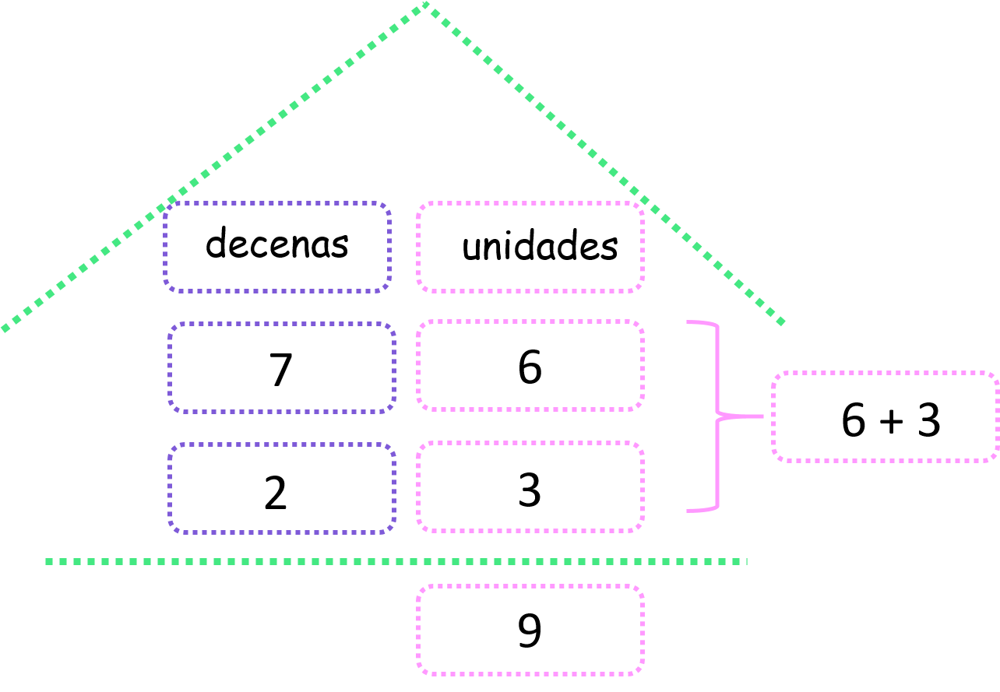
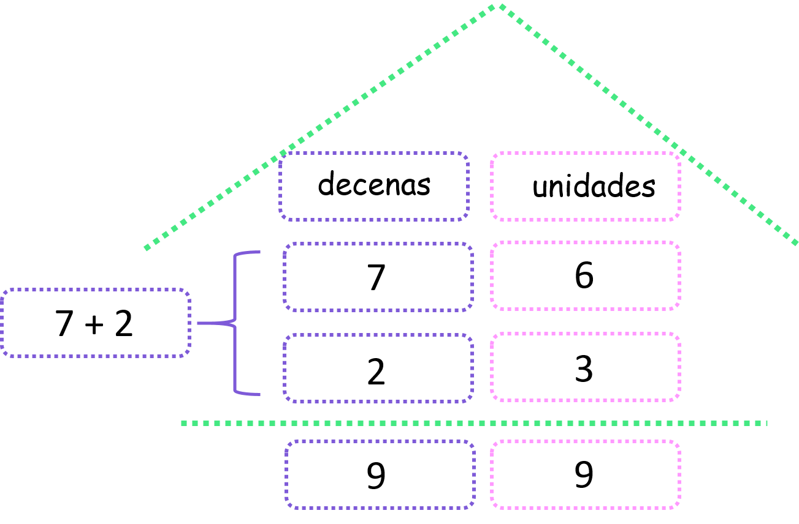
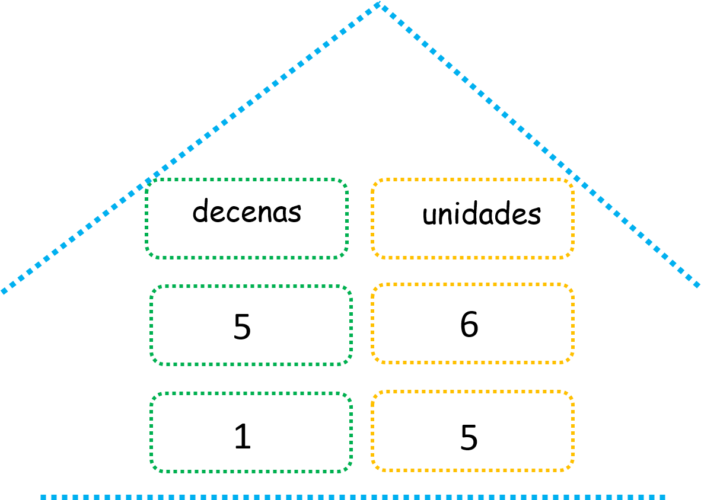
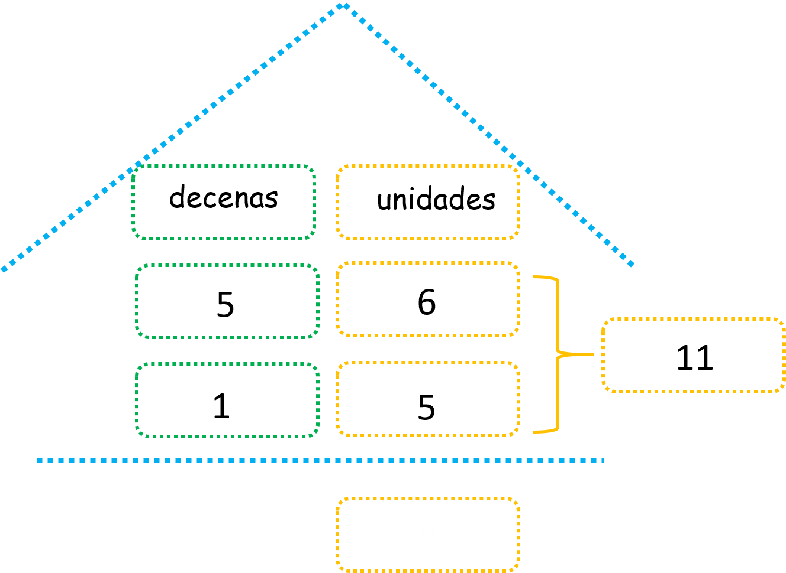
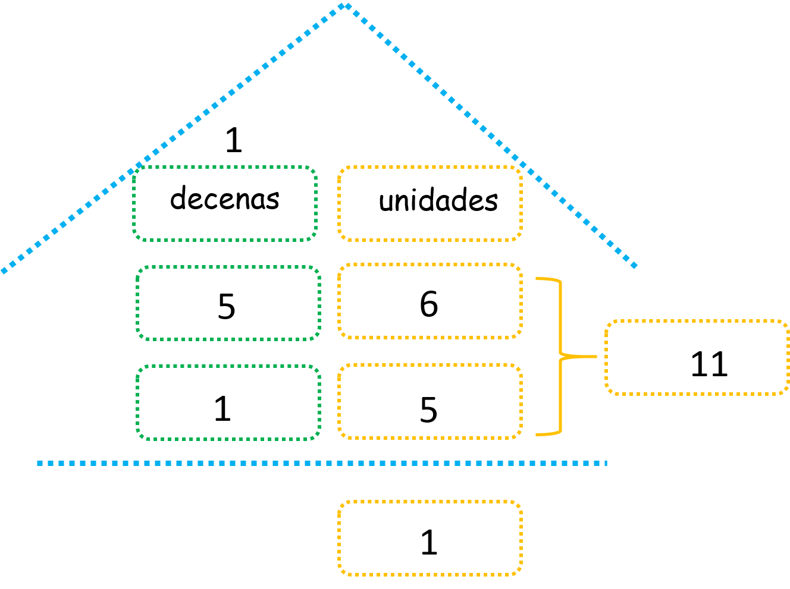
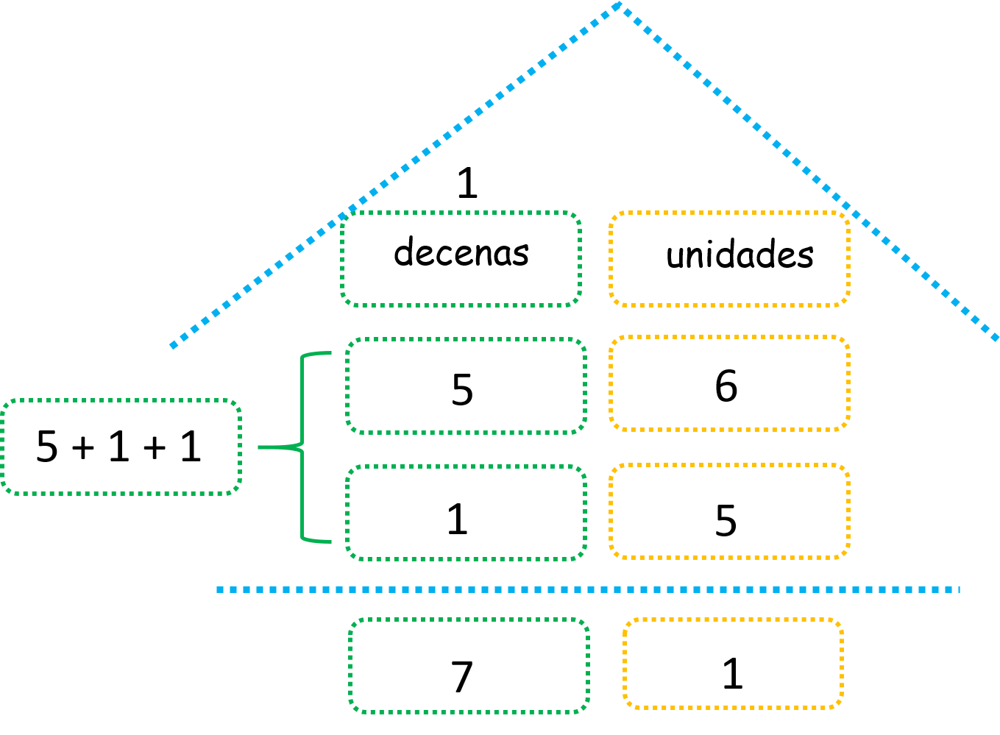

Sumas llevando
En este capítulo vamos a usar la suma
¿Qué es la suma llevando y para qué nos sirve?
Recordemos que sumar es “agregar, juntar, reunir”, esto quiere decir que a una cantidad de cosas le voy a poner otras más.
Observa:
A un primer conjunto de colores que tenía 5 colores le hemos agregado un segundo conjunto que tiene también 5 colores, y obtuvimos así un conjunto de 10 colores.
Cuando sumamos número más grandes de dos cifras, es decir, que tienen decenas y unidades, tenemos que usar unos trucos sencillos para hacerlo de forma más rápida y correcta.
Piensa en la siguiente suma:
Es un poco grande, ¿verdad? bueno nuestros dedos no nos van a alcanzar para sumar estas cantidades, así que por esto aprenderemos a "sumar llevando".
- ¿Qué vamos a aprender?
- Sumas sin llevar
- Sumas llevando
(1)Sumas sin llevar:
Para realizar sumas sin llevar, vamos a seguir los siguientes pasos:
Vamos a sumar:
A. Paso 1:
Ubicamos los números en las casillas correspondientes, es decir, en las unidades o en las decenas.
Recuerda que con la casita de las decenas y las unidades puedes ubicar más fácilmente los números en la casilla que les corresponde.
B. Paso 2:
Vamos a sumar solo los números que estén en la casilla de las unidades.
Observa:
C. Paso 3:
Sumamos solo los números que están en las casillas de las decenas.
Observa:
Y listo! ya tienes resuelta la suma sin llevar.
(2)Sumas llevando:
Para realizar sumas llevando, vamos a seguir estos pasos:
Vamos a sumar:
A. Paso 1:
Ubicamos los números en las casillas correspondientes, es decir en las unidades o en las decenas.
B. Paso 2:
Sumamos los números que se encuentran en las casillas de las unidades.
Observa que el resultado es 11, y este número tiene dos cifras, tiene unidades y tiene decenas. No podemos ponerlo en la casilla del resultado completo, tenemos que separarlo, escribiendo solo sus unidades debajo de las casillas de las unidades y llevándonos sus decenas sobre la casilla de las decenas.
Observa:
C. Paso 3:
Ahora debemos sumar los números que se encuentran en las casillas de las decenas. Ojo, no olvides sumar el 1 que pasó a vivir a la habitación de las decenas.
Observa:
Y listo! Ya resolvimos una suma llevando. ¿Has visto qué fácil es?
Material extra para trabajar el tema de sumas llevando:
En el siguiente enlace encontrarás un pdf descargable con diferentes tipos de ejercicios sobre sumas llevando creado por Primerodecarlos.blogspot.com.
En esta página encontrarás decenas de hojas con ejercicios para niños sobre sumas llevando y sin llevar creadas por Edufichas.com.
En esta dirección podrás descargar un puzzle sobre sumas llevando creado por Actiludis.com.
En esta dirección hallarás una actividad divertida coloreando con ejercicios de sumas llevando creado por Actiludis.com.
Vídeos orientativos:
En esta serie de vídeos “Sumas de dos números con llevadas para primaria” de Mundoprimaria.com encontrarás una explicación sencilla y gráfica sobre Sumas llevando: